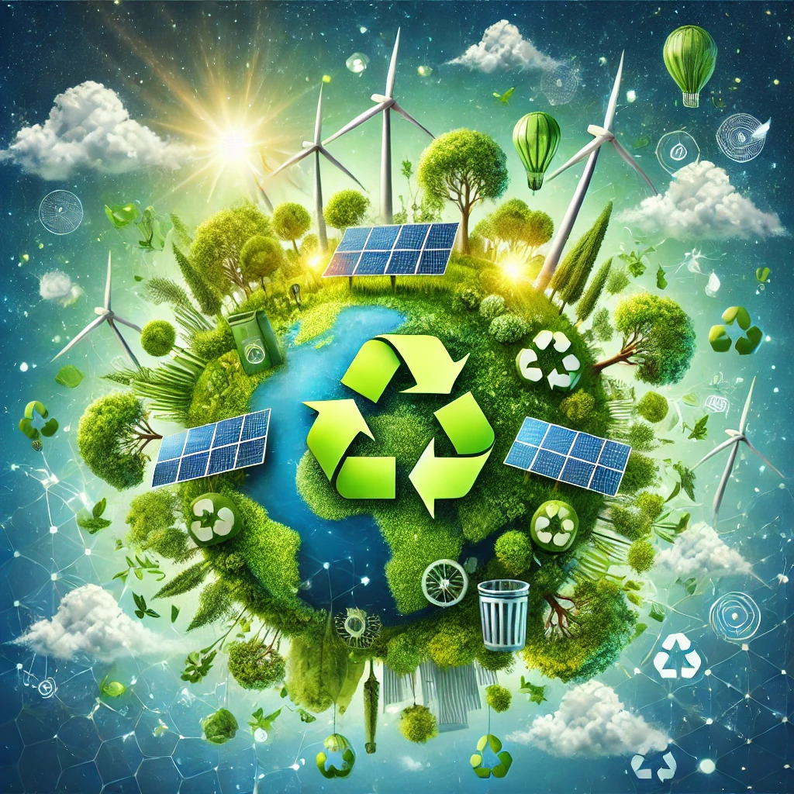

Sustentabilidad Financiera
La sustentabilidad financiera busca equilibrar el crecimiento económico con la responsabilidad ambiental y social. Este enfoque asegura que los recursos naturales y sociales no sean comprometidos para las futuras generaciones mientras se promueve el progreso económico.
¿Por qué es Importante la Sustentabilidad Financiera?
En un mundo donde los recursos son limitados, las prácticas financieras sostenibles son clave para un futuro próspero. Empresas y gobiernos adoptan medidas para combatir el cambio climático, apoyar comunidades locales y construir una economía más resiliente.
Principales Iniciativas en Fintech para la Sustentabilidad
- Inversiones verdes: Promoción de proyectos amigables con el medio ambiente.
- Préstamos sostenibles: Financiamiento de proyectos enfocados en innovación y preservación.
- Transparencia: Plataformas que permiten rastrear el impacto de las inversiones.
- Reducción de huella de carbono: Uso de tecnología digital para minimizar el impacto ecológico.
Ejemplos de Éxito
Algunas iniciativas inspiradoras incluyen:
- Plataformas de Inversión Verde: Wealthsimple, Acorns.
- Neobancos Sustentables: Triodos Bank, Bunq.
- Créditos Carbono: Fintechs que incentivan la compensación de emisiones vía blockchain.
Cómo Puedes Contribuir
Tú también puedes marcar la diferencia:
- Elige servicios financieros comprometidos con la sostenibilidad.
- Invierte en proyectos con impacto ambiental positivo.
- Reduce el uso de papel optando por soluciones digitales.
- Participa en programas de educación financiera sostenible.
Descubre más sobre cómo las fintech están transformando la sustentabilidad financiera.
Más sobre Fintech y Sustentabilidad